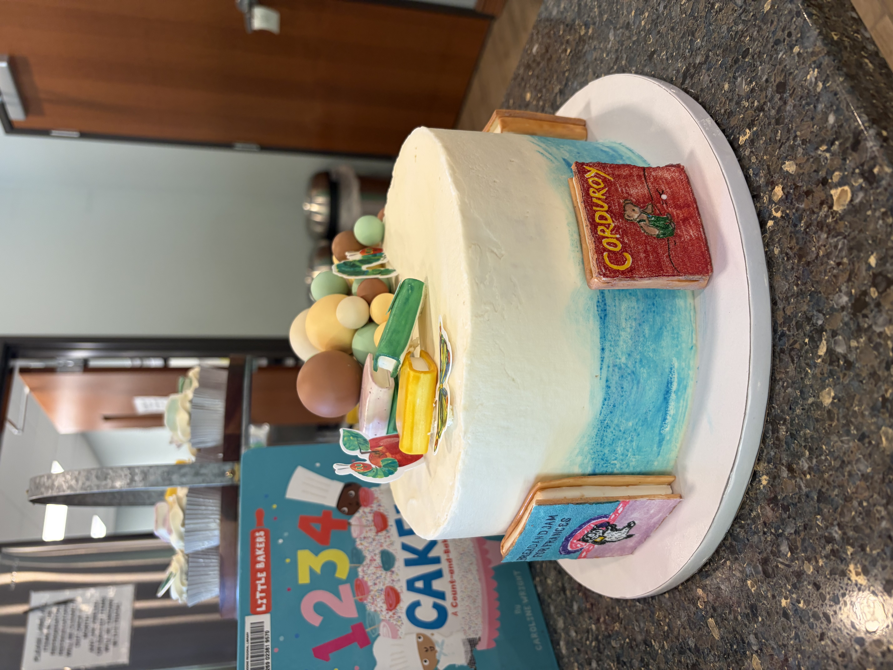
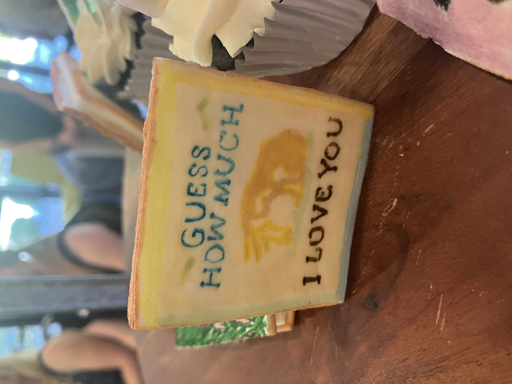
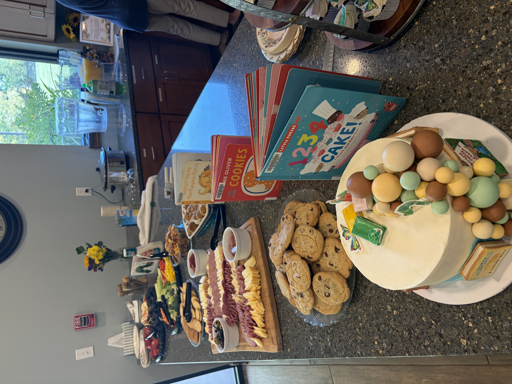
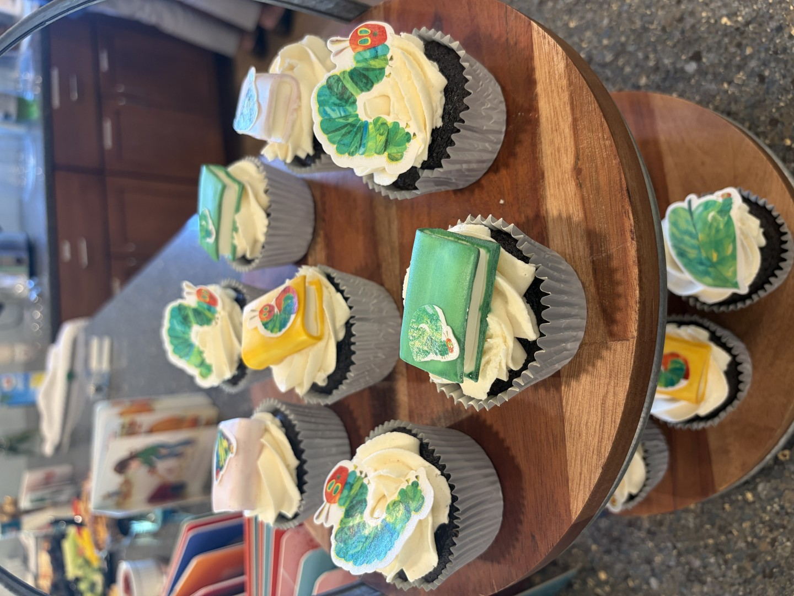
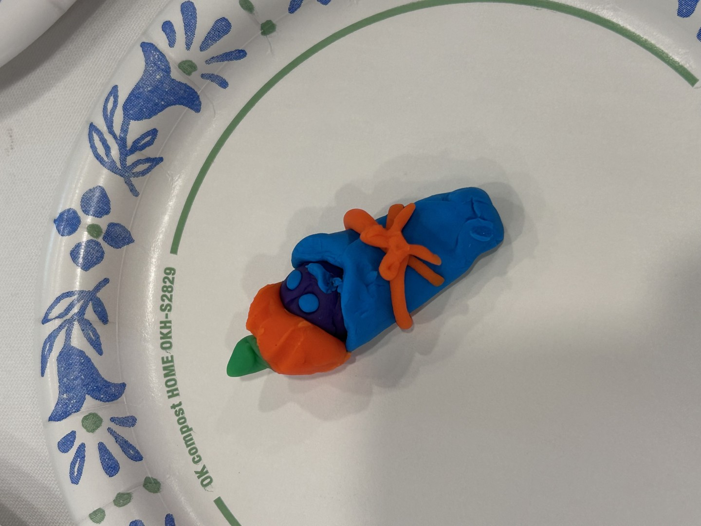
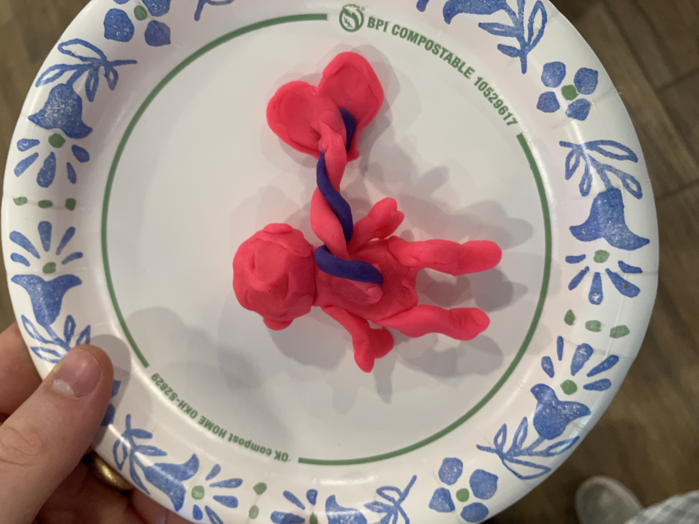

Our Baby Shower Pictures
2026-10-10This fall Katie Beth and I are awaiting the birth of our first child. In anticipation of his arrival, my mother and our friend Ashley threw Katie Beth a baby shower themed after children's books. Some of the decorations were so wonderful I wanted to share them here.
A local friend of my mom crafted this delicious vanilla cake, which was decorated with hand-painted fondant books. A true work of art! She also made matching cupcakes.






My boy Isaac and I put together this balloon arch based on The Very Hungry Caterpillar by Eric Carle. Don't try to make a balloon arch without an electric pump! It was critial to our success. Katie Beth sat under the caterpillar while she opened gifts, which included this gorgeous quilt from our church friend Amy and a knitted baby cap from her sister Rebekah.


As a shower game, guests used Play-Doh to craft little babies, which KB judged for creativity. This pumpkin-capped little guy came in first place. Collette and I collaborated on an anatomically correct baby, which has not had the umbilical cord clamped yet.


Thanks to our families and the Van Dorens for helping us organize and set up the party, and to everyone who attended! We are very blessed.